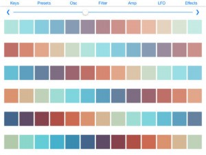

A very special offer for FiRe users… |
 |
$99 for two weeks only! |
Must use promo code FIREIXY at checkout. |
 |
||
STEREO MICROPHONEfor iPhone
|
|||
Record up to 24-Bit / 96kHz* |
|||
 and iPad
and iPad |
||
A very special offer for FiRe users… |
|
$99 for two weeks only! |
Must use promo code FIREIXY at checkout. |
|
||
STEREO MICROPHONEfor iPhone
|
|||
Record up to 24-Bit / 96kHz* |
|||
|
||
From the Creators of Top Paid Music Recording Apps ProStudio
Great Mobile Recording Studio App in your pocket.
Import any instrumental from your computer.
Email Importing directly into the App
*SoundCloud included to Share Music On FaceBook, Twitter, Tumblr and more directly from ProStudioFX
*iTunes File Sharing *Record unlimited layers of audio on the same trackReverb Early Reflections Settings, Late Reflections, Decay Time settings
*Track Length – Unlimited *Record Quality – 44.001 kHz Higher *Input Audio Decibel meter
*Calibrating Faders *Import any instrumental you from your computer.
*Latency compensation – within 1 ms *Unlimited Project *Bounce 2 track audio to M4a *Import MP3/M4A
*Unlimited Instrumental count
*Export Sounds into Computer and Burn to CD
*Export sounds to Mixing Software of your choice
*Purchase more Instrumentals (Top Recording Producers)
*Simply Make a Song in a matter of minutes.
*Record Audio playback Live Audio Monitoring.
*Email Import Function. mp3 m4a, and wav
*Mic Volume Meter Control
*instrumental Volume Meter Control
*AudioBus – connect your music apps together
*Grammy Award Winning Producers Beats added.
*IOS 7 ready
* Works on the iPad
*Updated the Recording Engines,
iPod Touch use your built in earpiece mic to record.
[appext 726521716]
[appext 729549189]Phawuo is a monophonic virtual-analog synth with “dirty” oscillators. Good for bass sound and effects.
It features:
– Two special oscillators with sawtooth / square waveform and pulse width modulation. They produce antialiased waveforms with inharmonicity in higher pitches.
– distortion and feedback ring modulation for each oscillator
– 24 dB/octave state-variable filter (LP-BP-HP)
– two ADSR envelopes for amplitude and filter
– LFO to modulate the frequency and pulse width of oscillators’ waveforms
– Audiobus support. Now you can stream live audio directly to other Audiobus-compatible apps! See http://audiob.us for more information.
– Background audio support when connected to Audiobus
– CoreMIDI support (input only)
[appext 732618765]Jam Synth is a fully featured monophonic guitar synthesizer for iOS. It tracks the pitch and amplitude of an incoming guitar signal and uses this information to control digital oscillators, adding a unique guitar infused edge to your synth leads. Unlike typical pitch to MIDI converters, Jam Synth forgoes MIDI altogether when producing sounds internally because it is impossible to shoehorn the expressive pitch and dynamics of a stringed instrument into the MIDI standard. Jam Synth can accurately track string bends and vibrato to produce much more organic synth sounds than other guitar to MIDI converters, including its own MIDI output.
Features:
– 3 Phase Distortion Oscillators (4 on iPad) with 8 different wave shapes: Saw, Square, Pulse, Double Sine, Saw-Pulse, Resonant 1, Resonant 2, and Resonant 3– Filter can be set to track picking dynamics
– Input section with Gate, Compressor, ADSR, and Input Filter
– FX section
— A fully featured LFO with 5 wave shapes and an invert switch for a wide range of pulsating effects
— Stereo Delay with a stereo width control for ping pong effects and a filter for emulating analog delay
— 3d Chorus, a classic “motionless” chorus that adds a stereo DIMENSION to the synth– LFO and Stereo Delay can be synced to tap tempo or incoming MIDI clock sync
– Highly accurate pitch tracking and tuner, accurate to 0.1Hz
– MIDI OUT and guitar to MIDI conversion for controlling other midi synths with your guitar through Core Midi accessories and Virtual MIDI
– string bends and vibrato are converted to MIDI pitch wheel data
– picking dynamics are converted to MIDI volume expression data
– compatible with guitar and audio interfaces made for iPhone and iPad
– detailed user manual
– Audiobus
– Fat Bass
– Super chip leads
Synthecaster fuses elements from guitars and keyboards into a full range polyphonic instrument that is intuitive, accommodates a wide variety of playing styles, and generates an even wider variety of sounds. The instrument fits on a mobile screen, yet allows for technical playing styles such as shredding and complex chord formation.
– Keys are arranged in string-like rows (tuned in perfect fourths by default)
– Sliding across keys in a row results in legato sliding or portamento gliding from note to note
– Sliding a key up or down will bend its pitch in the same direction
– Several notes can be played on the same row simultaneously
– Simultaneously play up to 7 notes on iPad or 5 notes on iPhone
– The entire keyboard spans over 6 octaves (not including the range added by oscillator tuning)Synthecaster’s audio is generated by a powerful and highly configurable polyphonic synth engine:
– Dual oscillators with individual tuning
– Filter with envelope sweeping
– Amplifier ADSR envelope
– Soft clip, hard clip, bitcrush, and downsampling distortion
– LFO assignable to amplitude, filter cutoff, or oscillator tuning
– Stereo flanger, chorus, and delay effects
– Over 30 preloaded synth presets
– Create custom presets and share them using AirDrop, Messages, or Mail
– High quality 44.1 kHz stereo audio output
– Audiobus compatibility
[appext 711042441]Casio original technology automatically analyzes the chords in your audio files.
The analyzed sound is then displayed as chord chart on the screen.
You can also use the app to check the chord positions for the instrument as you play, making it even more fun to play music.○○○○○ Product Features ○○○○○
An application that analyzes the tones played in an audio file and helps you write the chord chart.
Audio files in your iPad or iPhone are analyzed by the original Casio Chordana technology, and the sounds played in each song are displayed on the screen as chord chart. At the same time, the chord positions for the instrument are displayed as the song plays.
You can also play the results of the chord analysis on the instrument pad to check the outcomes. You can then edit the chords yourself as you listen to the actual sounds and write even more accurate chord chart. This is so much quicker and easier than trying to figure out the chords just by listening to them.
* The analyzed chords will be a close match to the mood of the song, but may not necessarily be the same chords as those used in the original.＜Displaying chords matched to the song[Chord display pane]＞
As well as showing the analyzed chords, the app has a guide bar that moves along with song playback, allowing you to check the chords being played in real time. The app also supports full-screen display so that you can just check the chord chart.
『Chord Guide』
By touching a chord in the chord display pane, you can check the chord position for the instrument selected in the Performance pane.『Editing Chords』
You can modify the chord chart by choosing a chord from up to three candidate chords that are closest in sound to the analyzed chord. You can also specify the chord manually.＜Tapping a performance by watching the chord positions[Performance pane]＞
Navigate in the screen using the piano or guitar finger positions to match the chord display. Of course, you can also use the chord list to check the position display for chords that are not shown. To play the chords, select the piano pad or guitar pad. To play individual notes, select them on piano keyboard. You can also use the recording function to record your performances.
* You can also purchase additional instruments and types of tones as add-ons.＜Customize your own tempo, key and vocal balance＞
By using the app to import an audio file into your iPad or iPhone, you can modify the tempo or key of the song. You can also adjust the balance between vocals and accompaniment, which is useful for transcription. If you change the key, the chords in the chord display pane are also converted automatically, so transposition is simple.
＜The Technology Behind Chordana＞
The Chordana series apps use original Casio technology to analyze audio files. The apps achieve unprecedented success in extracting natural chords from the time changes and the distribution of frequency components included in audio waveforms, while also taking into account the characteristics of the harmonies, melodies and rhythm instruments included in the song.
Casio original technology analyzes the chords in your audio files.By tapping the instrument pad along with a song, you can experience a virtual performance with the analyzed chords.
Even people who’ve never played a musical instrument will find it easy to play along and experience for themselves how much fun playing an instrument can be.* The sound produced when the pad is tapped will be a close match to the mood of the song, but may not be the same chord as that used in the original.
＜Experience a range of different musical instruments virtually[Performance pane]＞
You can use your favorite instrument pad to experience virtual playing. When you play using the piano pad or guitar pad, the Guide pane is displayed. A performance evaluation function is also included. After you finish playing, the app displays a radar chart showing the musical genre that most closely matches your playing style. You can also use the recording function to record your performances.『Piano Pad』
Allows you to play the analyzed chords as single tones (black button) or as full chords (white buttons).『Guitar Pad』
Assigns one of the analyzed chords to the individual strings and lets you play it as a chord or as an arpeggio.『Rhythm Pad』
Lets you play a range of rhythmic patterns in a combination of drums and bass.＜Experience the quality of the sound through changes in color[Guide pane]＞
This feature uses colors to visually show the differences in the sound in the song, based on the analyzed chords. It can also display the accents in a song or the performance history for the piano pad or guitar pad.＜Customize your own tempo, key and vocal balance＞
By using the app to import an audio file into your iPad or iPhone, you can modify the tempo or key of the song. This allows you to enjoy a song in a very different way from the original, such as by slowing down an up-tempo song, or dropping the key of female vocals so that it sounds more like a man.
You can also adjust the balance between the vocals and the accompaniment. By playing just the vocals and playing along yourself on the instrument pad, you can discover what it feels like to accompany your favorite singer.＜The Technology Behind Chordana＞
The Chordana series apps use original Casio technology to analyze audio files. The apps achieve unprecedented success in extracting natural chords from the time changes and the distribution of frequency components included in audio waveforms, while also taking into account the characteristics of the harmonies, melodies and rhythm instruments included in the song.
[appext 675014142]
[appext 455651228]Combines the synthesis power of Addictive Synth with an easy to use 4 track loop phrase recorder.
#1 Staff Favorites on US App Store !
It was never so easy to create beautiful sounds and driving loops.
The unique dynamic wavetable synthesis allows you to explore an unprecedented
wide range of sonic territory. From acid loops, crystal clear percussions, realistic
human choirs to complex musical soundscapes nothing seems impossible
with only a handful parameters to tweak.Together with the intelligent randomizer for both sounds and arpeggios you
will loose any sense of time and space while exploring unknown sonic territories.
Right from the beginning you’ll understand why it’s named Addictive.With Version 1.1 you get instant hardware access together with the AKAI SynthStation 25. Use the hardware buttons for scrolling through presets and arpeggios, operating the Arpeggiator and rolling our famous dice to get instant new arpeggio creations !
Features:
4 track Loop recorder
• Live recording/playback of phrases divided in up to 4 tracks with unlimited overdubbing.
• Mute/Solo for each track.
• Paste loops from other music Apps in one of the 4 tracks.
• Loop length can be set from one to eight bars.Dynamic wavetable synthesizer
• Six dynamic wavetable oscillators per voice, up to 48 total.
• Continous morphing between two oscillator sets.
• Realtime editing of up to 128 partials (overtones).
• Realtime editing of filter structure to create arbitrary body resonances.
• Extensive modulation possibilities using up to 4 LFOs and 4 Envelopes.
• Control matrix allows real time control of five parameters using MIDI Breath and Footcontroller, the modulation wheel and the tilt sensors.
• Monophonic or polyphonic with 4 voices. ( 2 voices on older devices )
• 128 factory presets, unlimited user presets can be shared.
• Up to three effects concurrently usable selected from: equalizer, phaser, flanger, chorus and stereo/cross delay.Live
• Play melodies live with onscreen keyboard pads. Drag fingers for slides and vibrato.
• Use a CoreMIDI compatible interface to play with a MIDI Keyboard.
• Musical scale setting makes for easy playing.Full featured programmable Arpeggiator
• Uses programmable sequences with up to 32 steps.
• Can trigger single notes and chords.
• Unique randomizer generates Arpeggios with 100% usability.
• 32 Arpeggios included, unlimited user arpeggios possible.
• For each step you can program tie, accent, transposition and note orderGlobal
• Export loops as audio and midi files.
• Audio pasteboard for exchange with other Apps
• Exchange user presets with File Sharing in iTunes.
The crew at Positive grid have been at it again, working their iOS app magic on a revolutionary new amp simulator style app for guitarists, bass players, and shredders alike.
Here are the main features –
Here’s a teaser video
For a full rundown on BIAS, drop by here – http://www.positivegrid.com/bias/
And keep an eye out right here for a full review soon!
The MultitrackStudio Remote app for iPad turns your iPad into a powerful remote control for MultitrackStudio:
* Control the transport, including VariSpeed, markers and cycling.
* Add and control tracks, groups, effect returns (up to 3) and the master section.
* Add and control effects and MIDI instruments.
* Toggle the Monitor / Punch / Sound On Sound buttons.
* Control the click track and the MIDI Keyboard Splitter.MultitrackStudio 7.5 is required. VariSpeed is available in MultitrackStudio Pro Plus only.
The iPad must communicate via WIFI (3G etc. is not supported). Furthermore the iPad and your computer must both be connected to your home network.Demo video
[appext 725618699]


{kind=link}
{kind=link}
{kind=link}
{kind=link}
{kind=link}
{kind=link}
{kind=link}
{kind=link}
{kind=link}